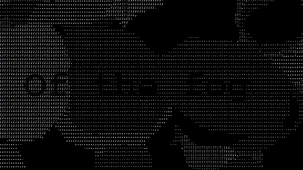

Act 3: Of The Fog
Descriptive Text
NOTE: If you are trying to view the live scene and ended up here instead, this is because your screen size is indicative of a device using touch controls and this project only works with mouse/track-pad, and keyboard. If this redirect happened in error and you do have a mouse/track-pad and keyboard you can access the scene HERE.
You can also tap HERE to send yourself a link to the project for later viewing.
Act 3 places the viewer in a 3D space with a fixed perspective. The scene contains curvilinear forms that the viewer can move using a click and drag motion. The entire scene shifts and moves with a fog-like motion. Overlaid on top of the scene is a set of texts which cycle in a random order and all pertain to the idea of what it might be like to be “of the fog”. Viewers can use the curvilinear forms to reveal or obscure text as they desire.
The scene also contains a simple soundscape consisting of “brown” noise meant to loosely mimic the ocean. The entire scene, while three dimensional, is rendered in very small ASCII characters. White characters of varying type on a black background generate the optical grayscale experienced by the viewer.
A demo video of this act can be viewed HERE.